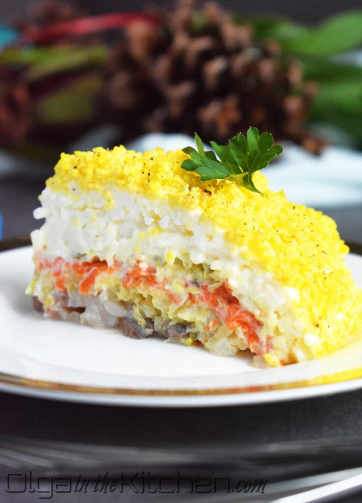

>
Mimosa
Mimosa

Description
This Mimosa Salad is so satisfying. Everything is grated finely, making the texture so delicate
and pleasant that it’s hard not to overeat. One of my readers, Liliana shared this recipe with me.
I had never tried the mimosa salad but I was very intrigued. My words to my husband after trying
it for the first time, “Where has this salad been all our lives?” We wolfed down half of the salad
between the two of us in 5 minutes.
We were hungry, and it’s THAT GOOD! It’s a keeper. It’s not just a keeper, but it’s a “sharer.”
You might as well just print a bunch of recipe copies so you are armed when you take this Mimosa
Salad to your next party. People will ask for the recipe.
Ingredients
- 2 (5 oz) cans tuna in oil, drained
- 6 large hard boiled eggs* (whites and yolks separated after boiling)
- 2 large carrots, boiled* and peeled
- 1 medium or 1/2 large onion
- 4 medium potatoes, boiled* and peeled
- 1 cup mayo + 2 Tbsp mayo, divided
- 1/4 cup extra light olive oil
- Salt and Pepper, to taste
- Tomato or dill for garnish, optional
Tips
*Tip: I like to pre-cook my carrots, potatoes and eggs so there’s no waiting for them to cool down.
You can even cook them 1-2 days ahead of time, let the cool to room temp then cover with plastic wrap
and refrigerate until ready to use. Then it’s really easy easy and read for quick assembly.
Steps
- Mix 1 cup mayo with 1/4 cup light olive oil and stir together until well blended and smooth. Transfer mixture to a
zip-loc bag and cut a tiny hole in the corner of the bag. You will be squeezing the mayo in thin strips over the salad
layers.
- Mix drained tuna with 2 Tbsp mayo and a sprinkling of pepper. Spread tuna mixture over the bottom of a glass baking dish
(9×9 square, 9×11 rectangular, or in a trifle dish). Drizzle a light layer of mayo over the tuna.
- Finely grate the egg whites evenly over the tuna and season lightly with salt. Drizzle a light layer of mayo over the
top.
- Finely grate carrot evenly over the salad, sprinkle lightly with salt and drizzle on another thin layer of mayo.
- Bring a small pot of water to a boil. Finely chop onion and boil for 5 minutes. Drain well and rinse with cold water to
cool it faster. Spread onion evenly over the salad and top with a thin layer of mayo.
- Finely grate potatoes evenly over the salad, season with salt and pepper and drizzle on remaining mayo. Spread mayo
gently and evenly over the top with a spatula.
- Top with finely grated egg yolk along with fresh dill